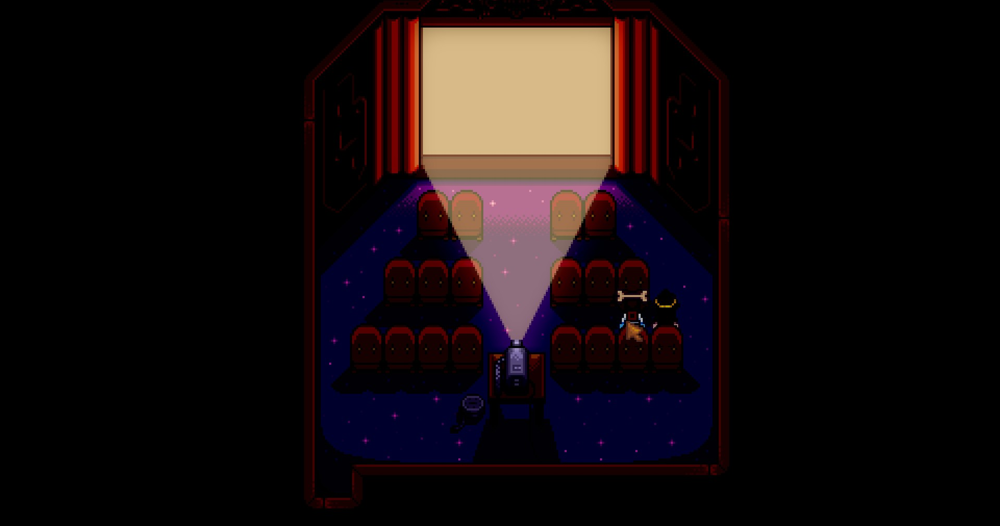

Why Stardew Valley?
I have a history of starting Stardew with someone, then stopping shortly after. Maybe it's just me, but it feels like Stardew is the go-to game for people in a relationship. The health of the relationship depends on how far you end up in the game. I've picked up and dropped Stardew with a few different people. I dismissed it as something I'm never going to get into, and it's not a game for me.
Along comes my current girlfriend, Princess, who wants me to play Stardew with her. I let her know my past with the game, and said I most likely was never going to play the game with her. She didn't take no for an answer, and asked me repeatedly for months. Eventually, I caved and said I'd not only play, but 100% complete the game with her if she beat Halo 2 on legendary. What unfolded after that was nothing short of a miracle.
Halo 2 came up because I asked her to play ever Halo game a few months prior, and I watched her struggle through the games on Heroic, and even normal. Going back to Halo 2, something clicked in her brain. She went full gamer mode, and beat the game faster than I ever imagined. No doubt, it was frustrating for her at points, but even until now, I've never seen her do so well at another game. I could feel the raw determination she had to prove me wrong. So, here we are. My Stardew Valley review.
The UI & Theme
When I was a teen, I played Harvest Moon for the first time on DS. Stardew reminded me of Harvest Moon, and was initially the reason I was apprehensive to playing. Harvest Moon is great, but I thought I could only enjoy a game like that once. The UI of Stardew is similar to every other game in the genre. This isn't a problem for me, as it's a tried and true UI, and allows you to move through the game seamlessly. The advanced options also allow you to change some elements, as well as tooltips to provide you with extra information.
You're a new farmer in town, and it's up to you to fill the shoes of your grandfather, who left the farm to you. It's silly how cliché this specific scenario is, but it works so well that people keep using it in their games. Everything about the style of this game feels very familiar, yet they managed to compliment it with having compelling backstories for the townsfolk.
The Gameplay
You're dropped on your farm with nothing but a few seeds and some tools. What you do from there is up to you. The game loosely guides you into the gameplay by giving you quests, and things to explore, but never forces you to do anything. Stardew is far from a linear experience, but there is a clear way to end the game. Making money and building relationships is your primary goal, and there are a handful of different wants to achieve that. Your secondary goal is to build up the town, and attempt to bring the townsfolk closer together.
Relationships
Everyone in town has a recognizable, yet unique personality. If you have a “type”, one of the 25+ characters will have something for you. You can build relationships with them by giving them gifts, talking to them, and completing missions for them on the mission board. The more you build your relationships, the more they trust you. These will unlock cutscenes, unique events, gifts in the mail, and even access to their room or homes. The goal for this is to marry the person you feel close with, and have them come live on the farm with you. If you play co-op, you can marry one of your partners.
Farming & Fishing
Tending to the farm is the primary way you're going to be making money. There are two routes you can take, but you can absolutely do both, which are gardening and tending to animals. When it comes to gardening, you can plant certain crops during certain seasons, and they grow at different speeds. Expensive seeds will take longer, but yield higher profit, which is what I decided to go for. The only time I needed to plant something else was to complete a quest or a recipe. You're given a huge amount of space on your farm, so never feel like you're stuck planting one thing. The further you get into the game, you can upgrade your tools and equipment to make your job easier. There are different tiers of items that increase your range, reducing the amount of manual labour you'll end up doing.
Alongside gardening, you can deck your farm out in barns and coops. You can raise chickens, cows, pigs, goats, rabbits, ducks, and other critters you find along the way. You tend to them by petting them, and making sure they have food every day. The more you do this, the higher their reputation will be with you, and will increase the quality of the items they produce. You can upgrade their houses to have more animals, and get special features, such as an auto-feeder.
Fishing is a standard experience, which is far from a negative. I enjoy fishing mechanics in video games, and Stardew doesn't disappoint. Different fish spawn at different times and weather patterns. You're also able to upgrade your fishing pole, get stronger bait, and attach lures that do various things. If you don't like fishing, you don't have to do it too often, but you will need to do it for some quests. It's also a great way to break up the pace of the game, if you want to do something on the side that still produces money. Due to the season system, you can't always make a massive profit in winter, as pigs don't product goods, nor can you plant crops.
Combat & Mining
The final thing to delve into is the combat, and mining. They go hand in hand because the various mines are where you'll be doing almost all of your combat. There are four different mines, but you spend most of your time in two: the regular mines, and the skull cavern. Here, you mine minerals to upgrade your tools, get crafting materials, and slay enemies to increase your experience, and get their drops. The further down you go, the better the rewards become, but the stronger the enemies get. Aside from the mining, figuring out how to get to the bottom of the mine as fast as possible is extremely fun. Racing to the bottom, or racing to see how much minerals you can get in a given day can be rewarding, especially if you use explosive ammo or bombs.
Experience
Everything you do in the game gives you experience. These can increase things from your max health, max energy, profit from selling items, and more. There are ten levels in each category, and every five levels, you get a special perk. These shape what kind of things you do. For example, you can pick between gaining reputation with animals faster, or getting 20% more profit from selling crops.
The Loop
There are a ton of hidden mechanics that you'll pick up along the way. No matter how far you get into the game, something new is always happening, and everything feels fresh. Eventually, you unlock two new areas; one of which has an entire new farm for you, that isn't affected by the season system. You can effectively plant whatever you want whenever you want. The amount of side stories that you get sucked into is wild for the scope of the game. It becomes so much more than farming, chatting, and grinding the mines.
Community Centre
The main objective in the early game is to complete the community centre. Mystical creatures called Junimos ask you for seemingly one of each item, and your job is to bring them to them. Once you complete the community centre, you kick out the Amazon-like clone, JojaCola, which exists to be an annoying capitalist entity. The town thanks you for repairing the centre, and bringing everyone closer together. Playing through the game now, it feels like this was originally the end of the game. It has a conclusive feel to it, but the game does press on.
Skull Caverns & Mr. Qi
One of the rewards for completing a part of the community centre, is access to the desert. You access this by repairing the bus, which you can then take to the desert. There's a new shop here, as well as the previously mentioned Skull Cavern, which is significantly harder. The day after you enter the cavern, you're given a quest in the mail by Mr. Qi to reach level 25. There's no elevator this time, so you need to make it to level 25 in one go. Time does slow down in the Skull Cavern, so that does give you some extra time to get there. You'll need it because after you get to 25, he asks you to get to 100 in a day.
Ginger Island
Another reward for completely three random community centre bundles is the ability to repair Willy's boat. Upon repair, you can take a boat to Ginger Island. This is the previously mentioned area that allows you to grow any crops at any time. Unlike the desert, Ginger Island is a lot more involved, and has an entire game worth of content. It's a whole new island with its set of secrets for you to find and explore. You also get access to a new mine, called the Volcano Dungeon. There's only ten levels, but they're brutally difficult to get through, and you need to do it in one sitting. Once you reach the end, you get access to the forge, which allows you to combine two rings, and enchant your weapon and tools. The ring combinations are fun to play with, and the enchants were thought-provoking to min-max, I enjoyed this part of the gameplay a lot. Outside the dungeon, you're tasked with finding all the golden walnuts, and building reputation with the newest member, Leo. There is another person on the island, but she only exists to provide you with a quest chain, and you can't build reputation with her. Once you get 100 golden walnuts, you're provided access to Mr. Qi's Walnut Room, where he gives you difficult quests for end-game currency. You can use these to buy the best of the best end-game items, likes stronger sprinklers, a key to open every door, bait that lets you get any fish at any time, and more.
Final Thoughts
Stardew is a beautiful, creative, and compelling game. It deserves the popularity and praise that it gets, as it's easily one of the best video games ever created. What really blows my mind is that it was made by one person, who still loves and updates the game. The experience reminds me of Minecraft, which has an unending amount of content, but you can do whatever you want at your pace. The progression in the game feels natural, and the gameplay loop was crafted to be smooth and satisfying. I can't give this game enough praise, you absolutely need to play it.
Completion & Master Record
Speaking as a completionist, you owe it to yourself to not only complete this game, but master it. Once you get to the Walnut Room, you're given a machine you can interact with that tells you how much of the game you've completed. Outside the achievements, there is more you can do in the game to master it. Having that clear outline as to what needs to be done, and what you're missing, makes this game a must master for all completionists.
There are some frustrations that you have to be mindful of. There's an achievement to cook every recipe. Be sure to watch the TV every Sunday and Wednesday, as this is the primary way of getting new recipes. If you miss out on this, you'll be stuck sleeping over and over to end the game to get these recipes, as you have nothing else to do. Another tip, be sure to start working on your reputation early. There isn't an achievement to max relationship with everyone, but it's part of the perfection tracker, counting towards mastering the game.
Image Gallery
My stats when I completed & mastered the game.
Would you like to see the rest of the images?
Master Record
Mr. Qi's perfection tracker.
Gameplay Images
Grandpa is proud of our work
Collecting the final Stardrop after catching every fish
Unlocking the golden clock, which costs ten million gold
A complete overview of our farm
We really didn't want to do the Joja playthrough, but it was required for an achievement. We fished this in under 5 hours

My character after the last thing was done.
Memories With Princess
Princess and I observing Oscar being a cute little pup, all snuggled up in bed.
Princess and I kissing in the fall
Princess and I getting married
Princess and I trapping Haley in the trash
Princess and I robbing a train (kinda)
Princess and I kissing between their baby dinosaur, Spike
Princess and I snuggled up in bed with Oscar
Princess and I kissing by our newly built Junimo hut
Princess and I enjoying a movie night together
Princess and I kissing by a plush we named after Brown Baby
Princess and I trying to figure out how to interact with our first child